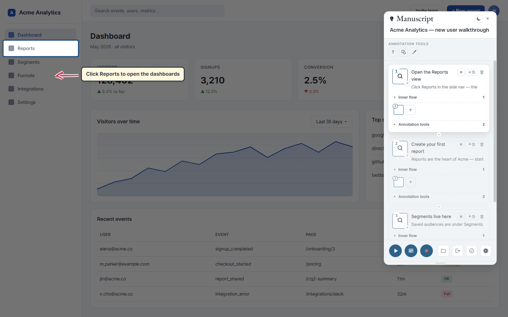
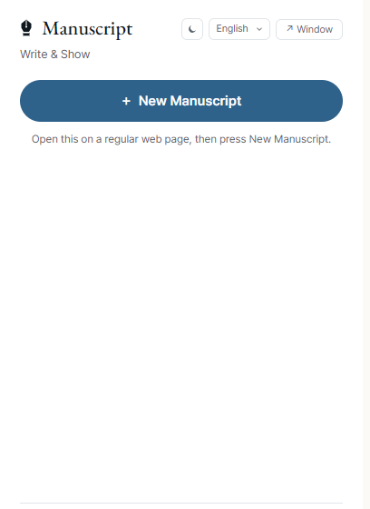
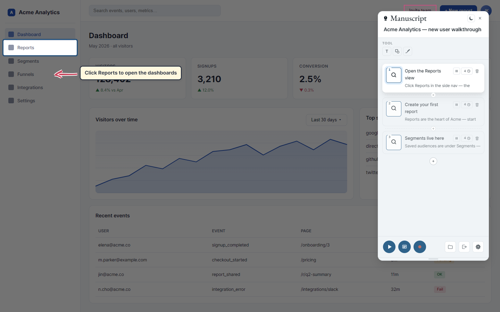
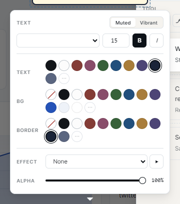
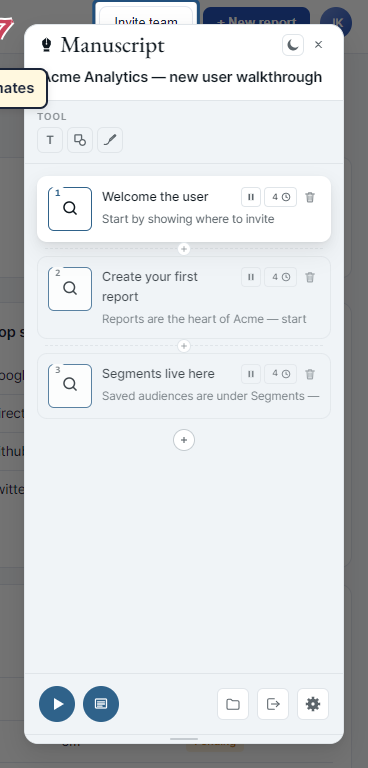
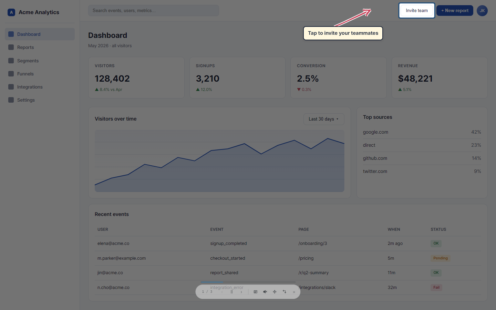
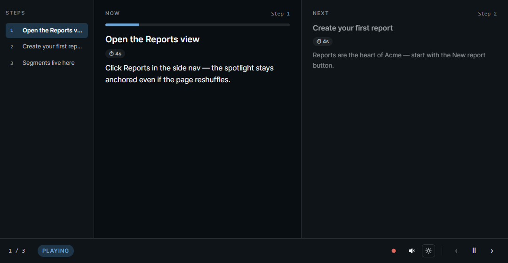

Write & show.
DOM-aware demos for the web.
쓰고 보여주기.
DOM 인식 기반 웹 시연 도구.
A Chrome extension for authoring multi-step product demos and manuals. Pick page elements with the picker, layer spotlights, text, shapes, and hand-drawn arrows, then replay step by step. The selectors survive small page changes, so your manual doesn't rot.
element picker로 페이지 요소를 선택하고, 스포트라이트·텍스트·도형·손그림 화살표로 강조한 뒤 스텝 단위로 재생하는 Chrome 확장 프로그램. 3-layer DOM 셀렉터로 페이지가 살짝 바뀌어도 매뉴얼이 깨지지 않습니다.

What's inside
핵심 기능
Six things that matter.
차별점 6가지.
3-layer DOM resolver
3-layer DOM 셀렉터
Stable attribute → text + parent → viewport rect. A single attribute or text change won't break your manual.
안정 속성 → 텍스트 + 부모 → 뷰포트 좌표. 속성이나 텍스트 하나가 바뀌어도 매뉴얼이 깨지지 않습니다.
iframe-aware
iframe 지원
Pick elements inside same-origin iframes. Spotlight, replay, and the action prompt all translate coordinates correctly.
same-origin iframe 내부 element도 picker로 잡힙니다. spotlight·replay·action prompt가 좌표 변환을 처리합니다.
Cross-page replay
페이지 이동도 이어재생
Mark a step as an action — when the user clicks and the page navigates to a new URL, the manuscript resumes on the next page automatically.
스텝을 action으로 표시하면 사용자가 클릭해 페이지가 다른 URL로 이동해도 새 페이지에서 시연이 자동으로 이어집니다.
Annotations that move
움직이는 annotation
Text, 8 shape kinds, hand-drawn freedraw (rough.js), arrows. Resize, rotate, and animate on entry (Fade/Slide/Bounce/Zoom/Rotate).
텍스트, 8종 도형, 손그림(rough.js), 화살표. 크기 조절·회전·등장 애니메이션(Fade/Slide/Bounce/Zoom/Rotate).
Replay with narration
음성 안내가 있는 재생
Step descriptions read aloud via Web Speech API. Pause / resume survives cross-page jumps. ← → Space Esc keyboard shortcuts.
스텝 설명을 Web Speech API로 음성 안내. 일시정지가 페이지 이동에도 유지됩니다. ← → Space Esc 단축키.
Detached prompter
발표자 노트 분리
A separate Chrome window with step list + presenter notes + playback controls. Mirror keyboard shortcuts, perfect for live demos.
스텝 목록·발표자 노트·재생 컨트롤이 있는 별도 chrome 창. 단축키 동일, 라이브 시연에 적합.
How it works
동작 방식
From picker to replay in five moves.
요소 선택부터 재생까지 5단계.
Start a new manuscript
새 시연 시작
Click the extension icon and hit New Manuscript. A floating panel appears on the page, and the site's theme color and fonts are picked up automatically.
확장 아이콘을 클릭해 새 시연을 누르면 페이지에 floating panel이 등장합니다. 현재 페이지의 테마 색·폰트가 팔레트에 자동 추가됩니다.

Pick an element with the picker
picker로 요소 선택
Each step card has a picker button. Hover the page to see a pink outline, click to lock the target — the element lights up while the rest dims.
각 스텝 카드의 picker 버튼을 클릭하고 페이지에 마우스를 올리면 분홍 outline이 표시됩니다. 클릭하면 그 element만 강조되고 나머지는 어두워집니다.

Layer text, shapes, or freedraw
텍스트·도형·자유 드로잉 추가
Click T to drop a text box, or open the shape menu (8 kinds) and drag on the page. Click any annotation to reveal a property popup — color, font, effect, opacity.
T로 텍스트 박스를, 도형 메뉴(8종)로 도형이나 화살표를 드래그해 그립니다. annotation을 클릭하면 색·글꼴·효과·투명도 등을 다루는 속성 popup이 열립니다.

Add more steps, reorder freely
스텝 추가와 재배치
Use the ⊕ between cards to insert, or the large ⊕ at the end to append. Drag a card to reorder. Clicking a card scrolls the page to its element and shows the spotlight.
카드 사이 ⊕로 끼워넣기, 끝의 큰 ⊕로 추가, 카드를 드래그해 순서 변경. 카드를 클릭하면 그 스텝의 element로 스크롤되고 spotlight가 표시됩니다.

Replay — solo or with a prompter
재생 — 단독 또는 발표자 노트와 함께
Hit ▶ in the panel footer for a translucent controls pill. Use ← → to step, Space to pause, Esc to exit. Detach the prompter to keep your notes on a second screen.
패널 하단 ▶로 재생, 반투명 controls pill이 나타납니다. ← → 스텝 이동, Space 일시정지, Esc 종료. 발표자 노트를 분리해 두 번째 화면에 띄울 수 있습니다.

Runtime bridge
런타임 브리지
Embed Manuscript on any page you control.
본인이 운영하는 페이지에 Manuscript를 임베드.
manuscript.configure({ banner: false }).
manuscript.configure({ banner: false })로 끄고 직접
UI를 보여줄 수도 있습니다.
manuscript-bridge.0.1.2.js is a tiny JavaScript library
(under 11 KB, zero dependencies) that lets your web page drive the
Manuscript extension via window.postMessage. Load a tour
JSON, hit play, and the extension takes over with spotlight, annotations,
narrated playback, and the controls pill. The user must have the
Manuscript extension installed — the bridge auto-detects and shows a
small install banner when it's missing. Standalone playback (the default)
is view-only and tears down cleanly on exit.
manuscript-bridge.0.1.2.js는 약 11 KB의 작은 JavaScript
라이브러리(의존성 없음)로, 호스트 페이지가
window.postMessage로 Manuscript 확장을 제어합니다. 투어 JSON을
로드하고 play를 호출하면 확장이 spotlight·annotation·음성 안내·controls
pill을 대신 처리합니다. 사용자가 Manuscript 확장을 설치해야 동작하며,
미설치 시 브리지가 자동으로 안내 배너를 띄웁니다. 기본 standalone 재생
모드는 view-only이며 종료 시 잔재를 깨끗하게 정리합니다.
Usage
사용 예제
1) Add the bridge library and your tour to your page:
1) 브리지 라이브러리와 투어 JSON을 페이지에 둡니다:
<!-- in your page --> <script src="/manuscript-bridge.0.1.2.js"></script> <button id="start">Take the tour</button> <script> const btn = document.getElementById('start'); btn.addEventListener('click', async () => { // auto-detect: false → bridge shows the install banner if (!(await manuscript.isInstalled())) return; btn.hidden = true; const scenario = await fetch('/tours/tour-en.json').then(r => r.json()); await manuscript.load(scenario); await manuscript.play({ standalone: true }); }); // Re-show the button when replay ends (user hit ✕ or last step finished). manuscript.onExit(() => { btn.hidden = false; }); // Or use the DOM event form: // window.addEventListener('manuscript:exited', () => { btn.hidden = false; }); </script>
<!-- 호스트 페이지 안에 둡니다 --> <script src="/manuscript-bridge.0.1.2.js"></script> <button id="start">투어 시작</button> <script> const btn = document.getElementById('start'); btn.addEventListener('click', async () => { // 자동 감지: false 면 브리지가 설치 안내 배너를 띄움 if (!(await manuscript.isInstalled())) return; btn.hidden = true; const scenario = await fetch('/tours/tour-ko.json').then(r => r.json()); await manuscript.load(scenario); await manuscript.play({ standalone: true }); }); // 재생 종료(✕ 또는 마지막 step 완료) 시 버튼을 다시 보이게. manuscript.onExit(() => { btn.hidden = false; }); // 또는 DOM 이벤트 형태로: // window.addEventListener('manuscript:exited', () => { btn.hidden = false; }); </script>
2) Public API surface (manuscript.*):
2) 공개 API (manuscript.*):
// Discovery manuscript.isInstalled() // → Promise<boolean> manuscript.configure({ banner: false, timeoutMs: 2000 }) // Lifecycle manuscript.load(scenario) // object or JSON string manuscript.play({ startIndex, paused, standalone }) manuscript.pause() / manuscript.next() / manuscript.prev() manuscript.jump(index) manuscript.exit() // Replay-end notification — fires on ✕ or natural end of tour const off = manuscript.onExit(() => { /* restore your UI */ }); // off() ← call to unregister // or: window.addEventListener('manuscript:exited', handler)
// 발견 manuscript.isInstalled() // → Promise<boolean> manuscript.configure({ banner: false, timeoutMs: 2000 }) // 라이프사이클 manuscript.load(scenario) // 객체 또는 JSON 문자열 manuscript.play({ startIndex, paused, standalone }) manuscript.pause() / manuscript.next() / manuscript.prev() manuscript.jump(index) manuscript.exit() // 재생 종료 알림 — ✕ 클릭 또는 마지막 step 완료 시 발생 const off = manuscript.onExit(() => { /* 사용자 UI 복원 */ }); // off() ← 호출해서 등록 해제 // 또는: window.addEventListener('manuscript:exited', handler)
Downloads
다운로드
manuscript-bridge.0.1.2.js
The bridge library. Drop it into your page and the manuscript.* global appears.
브리지 라이브러리. 페이지에 추가하면 manuscript.* 전역이 노출됩니다.
SKILL.md
Hand this file to an AI agent (Claude, Cursor, …) along with a URL — the agent emits a ready-to-play tour JSON. No DOM picking, no manual JSON editing.
이 파일을 AI agent(Claude, Cursor 등)에 URL과 함께 전달하면 agent가 그대로 재생 가능한 투어 JSON을 출력합니다. DOM 직접 선택·JSON 수동 편집 불필요.
↓ DownloadTour JSON (example)
Example only — not a template for your site. The 8-step tour of this landing page. Selectors target elements that exist here (#features, #bridge, …) and will not match your own page. Use it as a reference shape, then have your AI agent author a fresh JSON for your URL via SKILL.md. English and Korean versions share the same selectors — only narration and step names differ.
예제일 뿐 — 본인 사이트 템플릿이 아닙니다. 이 랜딩 페이지를 8 스텝으로 안내하는 투어입니다. 셀렉터가 이 페이지의 요소(#features, #bridge 등)를 가리키므로 본인 페이지에서는 매칭되지 않습니다. 구조만 참고하고 본인 URL용 JSON은 SKILL.md로 AI agent에 새로 생성시키세요. 영어·한국어 버전은 셀렉터가 동일하며 narration과 step 이름만 다릅니다.
Install
설치
Manual install in under 3 minutes.
3분 안에 수동 설치.
Manuscript is currently in closed beta and not yet listed in the Chrome Web Store. Install the unpacked extension once and Chrome keeps it loaded across sessions.
현재 Manuscript는 closed beta 단계라 Chrome 웹 스토어에 아직 등재되어 있지 않습니다. 압축 해제된 확장 프로그램을 한 번 로드하면 Chrome이 세션 간 유지합니다.
↓ Download manuscript-0.1.3.zip
-
Download
the release zip and unzip it to a stable folder
(for example
C:\Users\<you>\Documents\manuscript). Don't delete this folder later — Chrome loads from it on every restart. -
In Chrome, open
chrome://extensions/. - Toggle Developer mode on (top-right corner).
- Click Load unpacked (top-left).
- Select the unzipped folder. Manuscript appears in the extension list.
- Click the puzzle-piece icon in Chrome's toolbar and pin Manuscript for one-click access.
-
Open any regular web page (
github.com, a docs page, your own product) and click the Manuscript icon. New Manuscript will request page access — accept once and you're authoring.
-
다운로드
버튼으로 zip을 받고 안정적인 폴더(예:
C:\Users\<본인>\Documents\manuscript)에 압축을 풉니다. 이 폴더를 나중에 지우면 안 됩니다 — Chrome이 재시작 때마다 이곳에서 로드합니다. -
Chrome 주소창에
chrome://extensions/를 입력합니다. - 우상단 개발자 모드 토글을 켭니다.
- 좌상단 압축해제된 확장 프로그램 로드를 클릭합니다.
- 압축을 푼 폴더를 선택하면 Manuscript가 확장 목록에 나타납니다.
- Chrome 툴바의 퍼즐 아이콘에서 Manuscript를 고정해 원클릭 접근을 만듭니다.
-
일반 웹 페이지(
github.com, 문서 사이트, 자사 제품 등)를 열고 Manuscript 아이콘을 클릭, 새 시연을 누르면 페이지 접근 권한을 요청합니다. 한 번 허용하면 바로 저작 시작입니다.
chrome:// pages
or on the new-tab page — Chrome blocks extensions on those by policy.
If a page was already open before installation, refresh it once so the
content script is injected.
chrome:// 페이지나 새 탭에서는 동작하지 않습니다
— Chrome 확장 정책상 막혀 있습니다. 설치 전에 이미 열려 있던 탭에서는
content script가 주입되도록 한 번 새로고침해주세요.
User guide
사용설명서
Everything you need to ship a manual.
매뉴얼 한 편을 완성하는 데 필요한 모든 것.
1. Quick start
1. 퀵 스타트
- Open any regular web page (not
chrome://, not the new-tab page). - Click the Manuscript icon and hit New Manuscript.
- A floating panel appears top-right of the page. The page's theme color and fonts auto-populate the palette.
- Click the panel title to rename your manuscript (e.g. "Checkout walkthrough").
- Click the picker on a step card → hover the page → click the target element.
- Use the toolbar buttons (T, shapes, freedraw) to layer annotations.
- Hit ▶ to replay. Use ← → Space Esc.
- 일반 웹 페이지를 엽니다 (
chrome://·새 탭 불가). - Manuscript 아이콘 클릭 → 새 시연 클릭.
- 페이지 우상단에 floating panel이 등장. 페이지의 테마 색·폰트가 팔레트에 자동 추가됩니다.
- 패널 타이틀을 클릭해 이름 변경 (예: "결제 페이지 가이드").
- 스텝 카드의 picker → 페이지 hover → 대상 요소 클릭.
- 툴바 버튼(T, 도형, freedraw)으로 annotation 추가.
- ▶로 재생. ← → Space Esc 사용.
2. Picking elements
2. 요소 선택
The picker uses a 3-layer selector strategy: a stable attribute
(data-testid, id, aria-label) first,
then text content with a 2-level parent path, then viewport
coordinates with nearby text snippets. If the page changes,
Manuscript walks down the layers until something matches.
picker는 3-layer 셀렉터 전략을 사용합니다 — 안정 속성
(data-testid, id, aria-label)을
먼저, 그다음 텍스트 + 2단계 부모 경로, 마지막으로 뷰포트 좌표 + 주변 텍스트.
페이지가 바뀌면 layer를 순차적으로 시도해 매칭합니다.
iframe support: same-origin iframe 내부 elements도 픽이 가능합니다. 좌표 변환은 frameElement.getBoundingClientRect()로 처리. Cross-origin iframe과 nested iframe(iframe 안 iframe)은 현재 미지원입니다.
iframe 지원: same-origin iframe 내부 요소도 픽 가능. 좌표 변환은 frameElement.getBoundingClientRect()로 처리합니다. Cross-origin과 nested iframe은 현재 미지원.
3. Annotations
3. annotation 편집
Three kinds — text, shape (8 sub-kinds: rectangle, ellipse, triangle, diamond, star, callout, line, block arrow), and freedraw (hand-drawn via rough.js). Click any annotation to open the property popup.
3종 — text, shape(8가지: 사각형/타원/삼각형/마름모/별/콜아웃/선/블록 화살표), freedraw(rough.js 손그림). annotation을 클릭하면 속성 popup이 열립니다.
Property popup
속성 popup
- Color — 8 swatches + site-extracted colors + custom picker.
- Muted / Vibrant toggle — swaps the 8-swatch palette without changing the UI palette.
- Font — site fonts first, then base fonts. With Asta Sans as a fallback so the font survives a page-context move.
- Effect — Fade / Slide / Bounce / Zoom / Rotate 2× as an entry animation.
- Opacity slider — separate for stroke, fill, text background.
- 색상 — 8 swatch + 사이트에서 추출한 색 + custom picker.
- Muted / Vibrant 토글 — UI 팔레트 변경 없이 8 swatch만 교체.
- 글꼴 — 사이트 글꼴 먼저, 그다음 base 글꼴. Asta Sans fallback 포함으로 페이지 컨텍스트가 바뀌어도 글꼴 유지.
- 효과 — Fade / Slide / Bounce / Zoom / Rotate 2× 등장 애니메이션.
- 투명도 슬라이더 — stroke / fill / text 배경 각각.
Resize, rotate, animate
크기 조절·회전·애니메이션
Click an annotation to reveal handles. Corner drag = resize, top ↻ = rotate, bottom-left 🗑 = delete, top-right ▶ = preview the entry animation. Rotation + animation combine, the annotation lands at the chosen angle.
annotation을 클릭하면 핸들이 표시됩니다. 코너 드래그로 크기 조절, 상단 ↻로 회전, 좌하단 🗑로 삭제, 우상단 ▶로 애니메이션 미리보기. 회전과 애니메이션이 결합되어 최종 각도로 안착합니다.
4. Steps & reorder
4. 스텝과 재배치
- Insert between — small ⊕ between cards.
- Append — large ⊕ at the bottom.
- Reorder — drag a card by its body.
- Spotlight a step — click the card. The page auto-scrolls to the picked element and shows the spotlight.
- Description — contenteditable text on the card. Used as the presenter note and read aloud during replay.
- Timer chip — click the seconds value on the top-right of a card to set auto-advance.
- Action toggle — pause icon on the top-right toggles "wait for user click".
- 스텝 사이 삽입 — 카드 사이 작은 ⊕.
- 끝에 추가 — 하단 큰 ⊕.
- 순서 변경 — 카드 body를 드래그.
- 스텝 spotlight — 카드 클릭. 페이지가 해당 요소로 자동 스크롤되고 spotlight 표시.
- 설명 — 카드의 contenteditable 텍스트. 발표자 노트로 사용되며 재생 중 음성으로 읽힙니다.
- 타이머 chip — 카드 우상단의 초 단위 값 클릭으로 자동 진행 시간 설정.
- action 토글 — 우상단 일시정지 아이콘으로 "사용자 클릭 대기" 토글.
5. Action steps
5. action 스텝
Turn a step into an action by clicking the pause icon on the card. During replay, an "Click or type in this area" bubble appears on the target element and auto-advance pauses until the user interacts. If the click navigates to a new URL, Manuscript resumes the manuscript on the new page automatically.
카드의 일시정지 아이콘을 클릭하면 그 스텝이 action 스텝으로 바뀝니다. 재생 중 대상 요소에 "이 영역을 클릭하거나 입력하세요" 버블이 뜨고 자동 진행이 멈춥니다. 사용자가 클릭해서 다른 URL로 이동해도 새 페이지에서 시연이 자동 재개됩니다.
6. Replay & prompter
6. 재생과 프롬프터
Hit ▶ in the panel footer. A translucent controls pill mounts at the bottom — it darkens on hover and remembers its drag-end position across pages. The progress strip floats above the pill.
패널 하단 ▶로 재생을 시작합니다. 반투명 controls pill이 하단에 마운트되며 hover 시 진해집니다. 드래그로 위치를 옮기면 페이지 이동에도 위치가 유지됩니다. progress 스트립은 pill 위에 떠 있습니다.
Keyboard
키보드
- ← / → — previous / next step
- Space — pause / resume
- Esc — exit replay
- ← / → — 이전 / 다음 스텝
- Space — 일시정지 / 재개
- Esc — 재생 종료
Detached prompter
발표자 노트 분리
The ↗ Window button in the popup opens a separate Chrome window with a 3-column layout — step list, current note, controls. Same keyboard shortcuts, so you can drive the demo from a second monitor.
popup의 ↗ Window 버튼으로 별도 Chrome 창이 열립니다. 3-column 레이아웃 — 스텝 목록 / 현재 노트 / 컨트롤. 단축키 동일, 두 번째 모니터에서 시연 진행 가능.

Narration (TTS)
음성 안내 (TTS)
Toggle the speaker icon in the controls pill (or in the prompter footer). Step descriptions are read via window.speechSynthesis; voice picker lives in the panel's gear settings. Auto-advance waits for narration to finish.
controls pill(또는 prompter footer)의 스피커 아이콘으로 토글. 스텝 설명을 window.speechSynthesis로 읽고, voice 선택은 panel의 gear 설정에 있습니다. 자동 진행은 음성이 끝날 때까지 대기합니다.
7. Export & import
7. 내보내기·불러오기
The export button in the panel footer downloads the entire
manuscript as a single JSON file (selectors, annotations, site
colors, fonts, iframe paths). Import is the inverse —
Manuscript runs schema migrations automatically when the file
is older than the current SCHEMA_VERSION. Commit
these JSONs to git to version your demos like code.
패널 하단 export 버튼으로 시연 전체를 단일 JSON 파일로 내려받습니다
(셀렉터·annotation·사이트 색·글꼴·iframe path 모두 포함). import는 그 역방향이며
현재 SCHEMA_VERSION보다 오래된 파일은 자동으로 마이그레이션됩니다.
JSON을 git에 commit해서 시연을 코드처럼 버전 관리하세요.
8. Manuscript list
8. 시연 목록
Clicking the extension icon a second time shows the list of manuscripts you've authored. The most recent work is highlighted as Resume — one click puts you back where you left off, on the same page.
확장 아이콘을 다시 클릭하면 그동안 만든 시연 목록이 표시됩니다. 가장 최근 작업은 이어하기로 강조되며, 클릭 한 번으로 그 시연으로 복귀합니다 (같은 페이지로 자동 이동).
FAQ & known limits
FAQ · 알려진 한계
What v0.1 doesn't do yet.
v0.1이 아직 못 하는 것.
| Capability | 항목 | Status | 상태 | Note | 비고 |
|---|---|---|---|---|---|
| Video recording | 동영상 녹화 | Not yet | 미지원 | Planned for v0.2 (paid feature) | v0.2 유료 기능 예정 |
| Cloud save & share | 클라우드 저장·공유 | Not yet | 미지원 | v0.2 | v0.2 |
| Self-hosted server | 자체 서버 호스팅 | Not yet | 미지원 | v0.3 | v0.3 |
| Custom keyboard shortcuts | 사용자 정의 단축키 | Not yet | 미지원 | ← → Space Esc fixed | ← → Space Esc 고정 |
| Multi-select picker | Multi-select picker | Not yet | 미지원 | One element at a time | 한 번에 1개 |
| Dark mode | 다크 모드 | Not yet | 미지원 | v0.2 | v0.2 |
chrome:// pages | chrome:// 페이지 |
Blocked | 불가 | Chrome policy | Chrome 정책 |
| Nested iframes | 중첩 iframe | Not yet | 미지원 | depth-1 only, v0.2 | depth-1만 지원, v0.2 |
| Cross-origin iframes | Cross-origin iframe | Limited | 제한적 | Picker captures, but resolve fails. Same-origin works fully. | picker는 잡히나 resolve 실패. same-origin은 정상. |
| Palette switcher UI | 팔레트 변경 UI | Not yet | 미지원 | Default is studio. Switcher in v0.2. | default studio 고정. v0.2. |